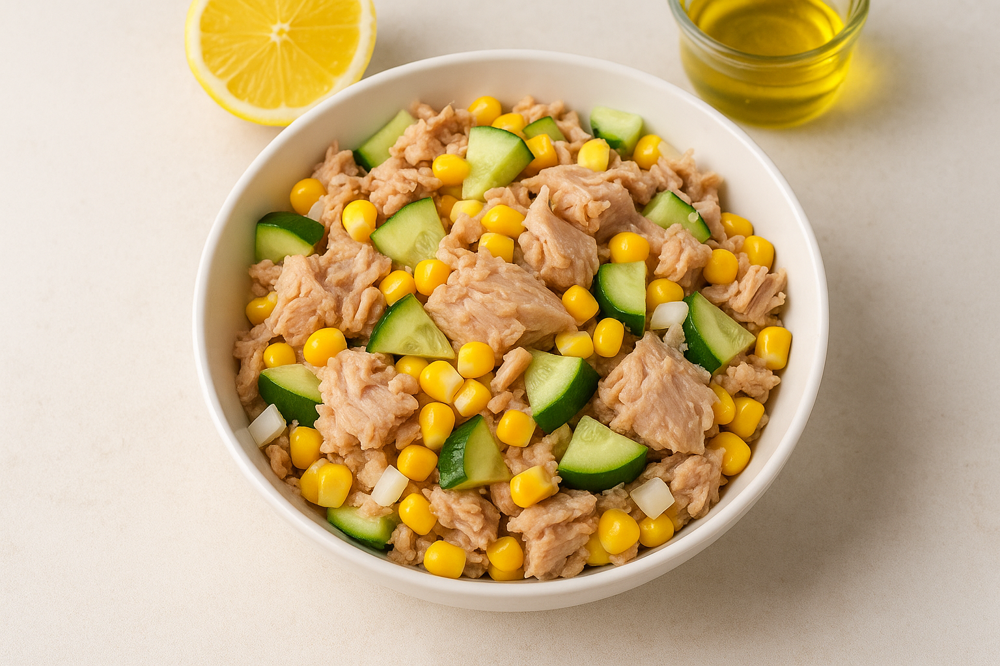

Tonhalsaláta
Hozzávalók (1 adag)
- 100 g tonhal konzerv (vízben, lecsöpögtetve)
- 60 g csemegekukorica
- 80 g uborka
- 1 teáskanál (5 ml) olívaolaj
- 1 teáskanál citromlé
- só, bors ízlés szerint
Elkészítés
A hozzávalókat keverd össze egy tálban, locsold meg olívaolajjal és citromlével. Tálalás előtt pár percre hűtsd be.